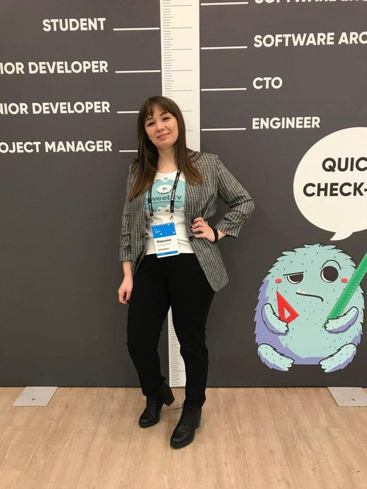
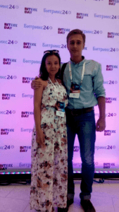
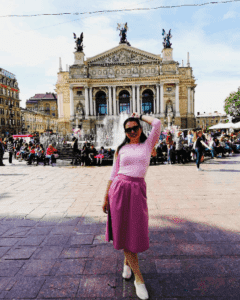
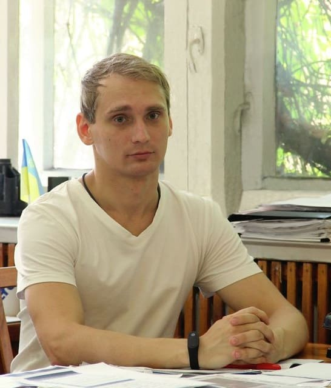
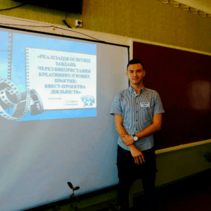
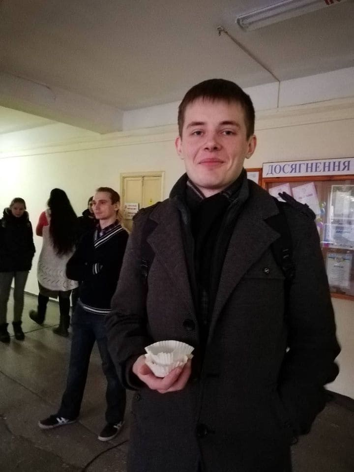
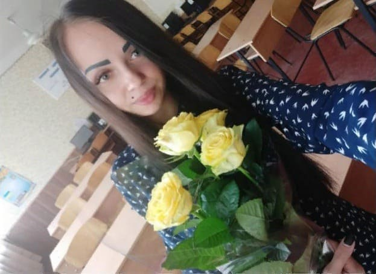

Історії наших випускників

Мар'яна Сошина (front-end developer, м. Київ), група КМ-08
Меня зовут Марьяна и я закончила нашу кафедру в 2012 году с красным дипломом бакалавра. Весной 2008 я все еще не могла определиться какую специализацию выбрать, но тут к нам в лицей была направлена делегация из ПГТУ, которая и сообщила о создании новой специальности на кафедре Высшей математики, конечно же я решила, что это судьба и поступила именно сюда. Группа у нас была очень разносторонняя, но веселая. Учиться было сложно и интересно одновременно. Самое необходимое умение, которое я приобрела за эти четыре года — системное и аналитическое мышление, которое сильно пригодилось мне везде, где бы я ни работала. Карьеру я начала с должности учителя математики в одной из мариупольских школ, но работать там больше года не получилось. К сожалению, на нашей кафедре не аккредитовали магистратуру, пока не было первого выпуска специалистов, поэтому я решила поступить в КНУ им. Т. Шевченко на факультет кибернетики. Там я получила диплом математика-аналитика. Также мой диплом был первой главой кандидатской диссертации, имею несколько публикаций в научных журналах. На 6 курсе университета я начала работать учителем информационных технологий в наиболее рейтинговом учебном заведении Украины — Киево-Печерском лицее № 171 «Лидер». Там моими сотрудниками были В.Б. Полонский, М.С. Якир и еще много заслуженных учителей Украины. Но душа, конечно, лежала к программированию… Первые шаги для работы в этом направлении я сделала уже после декрета. Мне предложили работу front-end разработчика в украинском стартапе SWEET.TV. Хоть и опыта работы в этой сфере у меня практически не было, но огромная поддержка руководителей и коллектива сделала свое дело — я стала частью этой команды и очень этим горжусь. Наш продукт уже зарекомендовал себя в Украине и выходит на международный уровень. Каждый день мы решаем сложные и интересные задачи в разных направлениях, работаем с крупными вендорами и выпускаем продукт, который предоставляет качественный и современный контент!

Пучка Катерина (керівник відділу автоматизації, м. Астрахань), Пучка Олег (веб-дизайнер), група КМ-09
Я получила красный диплом специалиста по прикладной математике в 2014 году. Позади остались весёлые студенческие годы, проведенные в чудесном коллективе интересных разносторонне развитых людей, и наступило время учиться применять полученные знания на практике. Но перед трудоустройством я вышла замуж за своего одногруппника Олега Пучку (о котором подробнее речь пойдёт чуть позже), поэтому трудовая деятельность началась у меня уже под новой фамилией. Поначалу продолжала заниматься репетиторством по математике, чем подрабатывала во время учёбы в университете, но вскорости устроилась на работу программистом в заводоуправление Метинвеста. Программировала на C# (пригодились основы программирования, полученные во время учёбы, и выработанное в те же времена умение добывать все необходимые знания самостоятельно). Отработав несколько месяцев, мы с мужем приняли решение уехать из города. Так мы оказались в Астрахани, живописном городе на берегу Волги. Долго не перебирая вакансии, я устроилась офис-менеджером в небольшой интернет-магазин, где я стала третьим сотрудником. В мои обязанности входило наполнение сайта уникальным контентом (сайт на 1С-Битрикс), несложные доработки сайта и непосредственная работа с клиентскими заказами (для внутренней работы использовался портал Битрикс24). Быстро освоив движок 1С-Битрикс и возможности системы Битрикс24, я заинтересовалась вторым направлением бизнеса руководителя компании — внедрением Битрикс24 в другие компании. В свободное от работы время я прошла все онлайн-курсы в этой сфере и изучила всю имеющуюся информацию в данной предметной области, после чего руководитель стал привлекать меня к работе с клиентами по этому направлению. Так постепенно мы закрыли интернет-магазин и стали развиваться в IT-сфере. С тех пор прошло 4 года, и на данный момент у нас успешно функционирует 3 направления: разработка сайтов на 1С-Битрикс, онлайн-реклама и автоматизация бизнеса с помощью Битрикс24 (теперь я — руководитель этого направления). И проблема, которая тормозит дальнейший рост нашей компании Трионикс, по сути, только одна — недостаток кадров, которые готовы к непрерывному самообучению, с высоким уровнем самоорганизации и большой отдачей к работе. Конечно, наша работа предусматривает наём удалённых сотрудников, но мы стремимся сформировать большую дружную компанию, которая не только вместе работает, но и умеет отдыхать. Мы вместе занимаемся спортом, играем в ЧГК и настольные игры, проходим квесты и много чего ещё мы делаем вместе!
Архіпов Дмитро (Network and Client Administrator, Sayama Travel Group, Тайланд), група КМ-09
Всем привет! Ну вот и настала моя очередь рассказать свою историю. Начну, пожалуй, с того, что математика не являлась моим самым любимым предметом в школе, даже несмотря на то, что я учился в физ-мат классе. 🙂 И когда пришла пора выбирать специальность, я немного запаниковал. С одной стороны, меня жутко пугала вероятность того, что я не осилю высшую математику, а с другой был уверен, что вижу своё будущее именно в информационных технологиях. Итак, жребий брошен, я подаю документы и с нетерпением жду результат. Прохожу! Ура?! Правильный ли выбор? Сразу ответ — ДА! Прекрасная группа, интереснейшие и по-настоящему профессиональные преподаватели. Ну а главное — огромное разнообразие предметов. Да, откровенно говоря, не вся информация казалась свежей и современной, но в последствии я понял, что эта база столь широка, что можно двигаться абсолютно в любом направлении! Не было просто, не все давалось легко, но никто и не обещал пальмы и кокосы. На третьем курсе пришло понимание, что пора зарабатывать деньги. И я был вынужден после занятий работать кассиром в McDonalds. Четвертый курс — стало понятно, что, имея знания, которые мне дает Альма-матер, есть возможность делать что-то более профильное, чем продажа бургеров. И я нашел работу в сервисном центре — ремонт компьютеров, мобильных телефонов и решение софтверных проблем. Да — платили мало, но я занимался интересным делом и получал ценный опыт! Пятый курс, собрав все силы и знания, что имел — поступаю на бюджет, увольняюсь с работы, и концентрируюсь на дипломе. Настал День D — защита диплома. Вот и все… Защитились! Улыбки одногруппников, низкий поклон преподавателям. Прекрасные пять лет — пожалуй лучшие! Шестой ку… Ах нет! Пора искать новую работу. Я отправляю резюме в несколько компаний и прохожу собеседования по скайпу. Одна из этих компаний дает добро, говорят: “Покупай билет и прилетай”. И вот уже через два месяца после получения диплома я лечу за 13000 км от родины, чтобы попробовать себя в роли Helpdesk engineer в крупной компании, предоставляющей туристические услуги в Тайланде (навыки английского полученные в университете очень помогли!). По прилету в Паттайю меня обучают специфике работы в главном офисе. После чего сообщают: “Полетишь на остров Пхукет и будешь там системным администратором в региональном представительстве”. Первые полтора года были максимально сложными для адаптации. Новая работа, новая страна, новая культура, новые люди, новые правила, даже транспорт едет в другую сторону. Все это так захватывало и меняло мировозрение! А еще, все это давало мне уверенность в себе, ведь все возможно, главное — пробовать! Вот уже пятый год, как я здесь и уже пора ставить новую планку, поэтому я начал учить JS и React Nativ (и еще раз спасибо кафедре за азы программирования!). Дело в том, что местами работа из сложной и интересной перерастает в скучную и рутинную, хочется чего-то нового. Благодаря ей у меня есть возможность жить в Азии и путешествовать по всему миру — Камбоджа, Малайзия, Лаос, Турция, Германия, Франция, Нидерланды и не думаю, что на этом можно останавливаться. А если оглянуться — эту возможность мне дали люди, которые учили меня и которые учились рядом со мной! Я очень благодарен своим преподавателям и одногруппникам! В итоге, хочу посоветовать вам верить в свои силы и никогда не останавливаться на достигнутом, а также пожелать выбрать путь, который вы полюбите!

Горбачова Анастасія (бізнес/системний аналітик «Fozzy Group», м. Київ), група КМ-10
Всем привет! Прикладная математика — это современная специальность, выпускники которой востребованы в самых различных сферах жизнедеятельности человека. Разработчики, архитекторы, аналитики, администраторы БД – это лишь малая часть возможных будущих профессий для специалистов ПМ. Именно разнонаправленность и актуальность стала решающим фактором для меня при выборе будущей специальности, ведь, как и многие выпускники школ, я не понимала, чем хочу заниматься в жизни и к чему у меня есть талант. Первый год обучения на кафедре для меня был настоящим испытанием после гуманитарной школы. Даже были мысли сменить факультет. Но, к счастью, я не решилась на это. Благодаря упорному труду и настойчивости уже на второй год обучения в моем сознании произошел переломный момент – мышление и отношение к учебе начали меняться, появилось понимание ценности тех знаний, которые неожиданно на меня свалились.Обучение на кафедре высшей и прикладной математики дает фундаментальную математическую подготовку, понимание современных языков программирования, информационных технологий, умение находить рациональные решения задач, быстро учиться и ориентироваться в информационном потоке. Полученные навыки мне очень пригодились в работе. Параллельно с учебой я начала свою трудовую деятельность в роли учителя информатики. После окончания университета некоторое время работала ASP.NET разработчиком. Программирование по-своему интересно и, безусловно, требует определенных технических навыков, способности «видеть дальше, чем другие». Но мне хотелось также развивать в себе и soft skills. Поэтому после переезда в столицу я решила сменить направление и стала бизнес/системным аналитиком в крупнейшем торгово-промышленном холдинге страны «Fozzy Group». Эта работа оказалась мне по душе, ведь она требует умения превратить неопределенность, идею и абстракцию в перечень однозначных, понятных и документированных задач, которые помогут бизнесу достичь своих целей, умения визуализировать информацию в разных форматах, моделировать бизнес-процессы, работать с БД, навыков межличностного общения. Но и этого мне показалось мало. Не так давно я стала руководителем IT-проектов в нашей компании и спектр моих компетенций продолжает расширяться. Моя работа дает возможность менять процессы внутри компании к лучшему, что в свою очередь упрощает жизнь ее сотрудников и увеличивает степень удовлетворенности наших гостей и клиентов, т.е. делает этот мир немного лучше. И все это стало возможным благодаря правильному выбору специальности!

Остапенко Артем (старший викладач каф. ВтаПМ в ПДТУ, к.т.н., м. Маріуполь), група КМ-09
Что такое прикладная математика? Этим вопросом я задавался в 2009 году, когда, окончив школу, выбирал себе будущую профессию. Наверное, как и все абитуриенты, я терялся во всех этих сложных и красивых словах: банковское дело, менеджмент, информатика и совсем не понимал их значений. Мне хорошо давались точные науки, но какое направление выбрать я не знал и, естественно, подал документы по всем специальностям. И, несмотря на хорошие баллы ЗНО, в первой волне вступительной компании я прошел только на прикладную математику в ПГТУ, которую мне посоветовала мой классный руководитель. Сюда я и поступил. Сейчас, оглядываясь на 10 лет назад, я с уверенностью могу сказать, что это было верное, хоть и немного вынужденное, решение. Специальность дала мне намного больше, чем просто профессию: мышление, жизненный вектор, страсть. Сейчас я работаю на своей же кафедре, обучаю студентов методам математического и компьютерного моделирования, занимаюсь наукой, активно учавствую в конференциях по всей стране. Но моей главной страстью стало программирование, которое я успешно применяю не только в науке, но и разрабатывая программное обеспечение. Для меня программист подобен художнику, который строит свои воздушные замки в воздухе и из воздуха, творя силой своего воображения. Но реальность в том, что для программирования сложных систем необходима та гибкость ума, которую вы получаете при обучении математики: рассуждать, абстрактно и алгоритмически мыслить, видеть проблему и ее решение сразу на нескольких уровнях абстракции – это все то, что делает хорошего программиста из простого кодера. Синтаксис, любую конструкцию языка можно узнать за несколько минут в google, но он вам не подскажет, как запрограммировать сложный алгоритм или организовать обработку сложных структур данных. Подытоживая, могу только процитировать одного из философов: «Выбери себе работу по душе, и тебе не придется работать ни одного дня в своей жизни». У меня все получилось именно так! P.S. А еще, как говорит моя одногрупница: «Поступая на нормальную специальность вы окружаете себя умными людьми, что, в свою очередь, повышает вероятность завести умных друзей на 80 %».

Єфремов Дмитро (вчитель математики, м. Маріуполь), група КМ-10
Вот и моя история пятилетней дружбы с кафедрой высшей и прикладной математики… Во время защиты диплома в механико-металлургическом техникуме в 2009 году, заместитель начальника железнодорожного депо, пожав мне руку, сказал: «нам нужны такие специалисты», на что услышал необдуманный, но идущий из сердца ответ: «к сожалению, это не мое! Я хочу быть УЧИТЕЛЕМ!». Забросив свой красный диплом тепловозника, начал поиски педуниверситетов… Шел месяц, второй, но что-то мне ничего не нравилось (или далеко от дома, или душа к городу не лежала). Каким чудом в тот год меня занесло в ПГТУ не помню, но те ощущения, когда я оттуда вылетел на крыльях счатья, узнав, что я смогу все-таки получить заветную профессию, помню до сих пор. Хотя пришлось еще доучиваться 2 года (на тот момент министерство не дало разрешение выпускать учителей, а только математиков-программистов), но это не затмило те 5 лет, когда ты приходишь на учебу, а у тебя по четыре пары математики (хотя дисциплины и разные, но объединяет их одно) и ты сидишь с открытым ртом и балдеешь от услышанного и увиденного)))) Благодаря большой поддержке преподавателей кафедры, я уже после первого курса работал в школе. Пролетело 8 лет, а душа радуется, что я на нужном месте. А будущим студентам хочу сказать, никуда не нужно ехать: вот красивый родной город, профессия учителя (хоть и специфическая, но прекрасная) и кафедра, где вам дадут отличные знания, только осталось их взять. Двери открыты! Вперед!

Кравченко Андрій (спеціаліст відділу УКІС Метінвест, м. Маріуполь), група КМ-14
Помню это был тёплый летний денёк, все радовались жизни, но не я. Мысль о том, что пришло время выбирать ВУЗ для поступления лишало всех красок жизни. У меня не было никакого представления о том, чем я хочу заниматься в будущем, на какую специальность пойти, и что вообще происходит. Страх перед новым и неизведанным нагнетали амбиции одноклассников, которые уже планировали свои поступления в Одессе, Киеве, Харькове и других городах нашей страны. Мне же, человеку, уверенность которого в своих знаниях математики была сильнее уверенности в себе, пришлось принимать безамбициозное решение. Я взвесил свои знания, умения, способности и среди огромнейшего списка специальностей мне сразу приглянулась одна — «Прикладная математика». — Математика, я це люблю, — подумал я слоганом заведения, тогда ещё неподалеку расположенного от университета. И принял отчаянное решение: «Математика, так математика», — и подал документы на эту специальность. Только на эту. Следующие недели ожидания зачисления были хуже последних месяцев выбора специальности. Но первое место в списке сняло все переживания. — Ладно, — подумал я, — теперь я стану математиком, и буду знать всё только о ней. Как же я ошибался. Все боятся специальности «прикладная математика», но почему-то никто не обращает внимания, что эта специальность находится на факультете информационных технологий. Все явно ожидают, что расписание предметов будет выглядеть примерно так: Понедельник: 1-я пара — математика 2-я пара — высшая математика 3-я пара — физкультура (отменена, вместо неё математика) И так всю неделю. Но к моему глубочайшему удивлению в расписании даже не было этого слова! Но меня больше удивило: программирование, архитектура ЭВМ, и другие предметы направленные на изучение IT сферы. И уже на 2-ом курсе я понял — никакая это не прикладная математика, это прикладное программирование. Каждый год мы изучали что-то связанное с программированием: основы программирования, виды программирования (объектно-ориентированное, линейное и т.д.), моделирование не только процессов, но и 3D объектов, анимаций и много ещё чего интересного. И теперь, спустя 5 лет, я понял — математика сейчас везде, даже там, где вы её не ожидаете, но в реалиях современного мира она развивается вместе с программированием и моделированием. Вот вы думаете: «Отучусь я 4 года, и что? Учителем в школу?». Я скажу: «Да, но это только одна профессия из тех, которыми вы сможете заняться. Программист, системный аналитик, администратор базы данных, даже дизайнер (Photoshop и программы для рисования, такие как Corel, также входят в программу обучения), и это только самые распространённые профессии.» Сейчас, работая в IT сфере, я ощущаю на себе пользу полученных знаний. Пусть и не всех, но лучше какие-то знания будут напрасны, чем в нужный момент их не будет вообще. P.S.: Сферу IT сейчас ждут большие перемены. BigData, DataScience — это будущее электронного мира, и без знаний математики, а конкретно статистики и эконометрики, вникнуть в это всё будет не просто.
